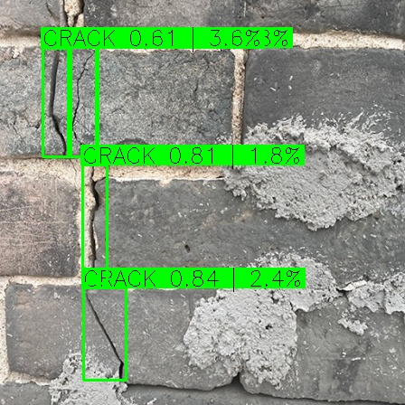
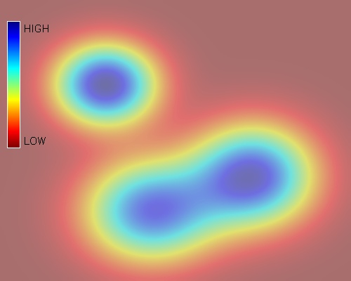
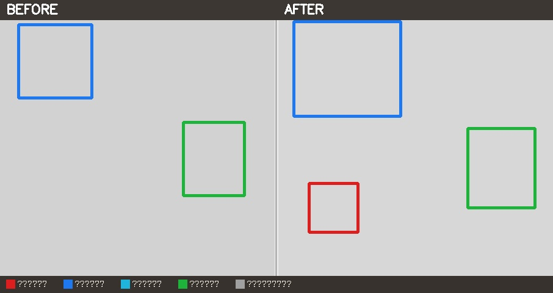

向下滚动
✨ 核心功能
检测 → 分析 → 建议 → 报告，全流程覆盖
四种检测模式
支持单图检测、批量检测、视频检测、摄像头实时检测，覆盖不同巡检场景。
五类损伤识别
自动识别裂缝（CRACK）、风化侵蚀（W_E）、碱蚀（ALKALI）、缺失（MISS）、苔藓（MOSS）。
损伤热力图 & 评级
热力图直观展示损伤分布，自动判定轻微/中等/严重三个等级，优先修缮一目了然。
智能修复建议
5 类损伤 × 3 种严重度 = 15 条专家级修复建议，检测完成自动匹配推荐方案。
修复前后对比
同一墙面修复前后照片自动对比，标注新增/扩大/缩小/稳定/已修复五种变化。
一键报告导出
自动生成专业 PDF 报告（含封面、汇总表、详情），支持 Excel 数据导出和结果图保存。
🧠 技术架构
基于 Ultralytics YOLOv8 构建，PyQt5 桌面界面，支持 GPU 加速推理
YOLOv8
目标检测引擎
mAP@50: 0.85+
→
PyQt5
桌面应用界面
宣纸古建主题
→
ReportLab
PDF 报告引擎
自动排版生成
→
PyInstaller
单文件打包
即开即用
五类损伤检测指标
以下数据为训练集评估结果，实际运行可通过"性能指标"功能复现
| 损伤类型 | 精确率 (P) | 召回率 (R) | F1 分数 |
|---|---|---|---|
| 🔴 裂缝 CRACK | — | — | — |
| 🟠 风化侵蚀 W_E | — | — | — |
| ⚪ 碱蚀 ALKALI | — | — | — |
| 🟣 缺失 MISS | — | — | — |
| 🟢 苔藓 MOSS | — | — | — |
* 运行 性能指标.py 获取最新评估数据后填入
🖼️ 软件截图
宣纸古建主题界面，专业与美感兼备



* 运行软件截取实际界面图片后替换占位图
📥 下载软件
支持 Windows 桌面版 与 Android 移动版
v1.0
Windows 版
- 🖥️ 系统要求：Windows 10 / 11（64 位）
- 💾 安装包大小：约 450 MB（含模型权重）
- ⚡ 支持 GPU（CUDA）加速推理，也可 CPU 运行
- 📦 解压即用，无需安装 Python 环境
v1.0
Android 版
- 📱 系统要求：Android 8.0 及以上
- 💾 安装包大小：约 53 MB
- 📷 支持拍照检测、相册导入
- 🧠 内置 TFLite 模型，离线运行无需联网
⬇ 下载 Android 版（APK · ~53MB）
安装前请开启"允许安装未知来源应用"